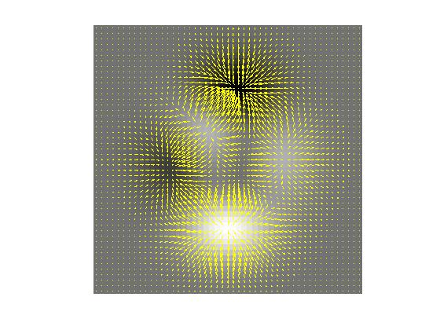

visDemFlow
Visual pixel flow directions and magnitude on a DEM
Contents
Description
visDemFlow(E, R, S) displays a DEM E as a grayscale image and superimposes a quiver plot showing the direction R and magnitude S of pixel flow directions.
Note: When R, S, and E contain more than 50 rows, visDemFlow crudely downsamples R and S to avoid trying to display too many quiver arrows simultaneously.
Example
E = peaks; [R, S] = demFlow(E); visDemFlow(E, R, S);